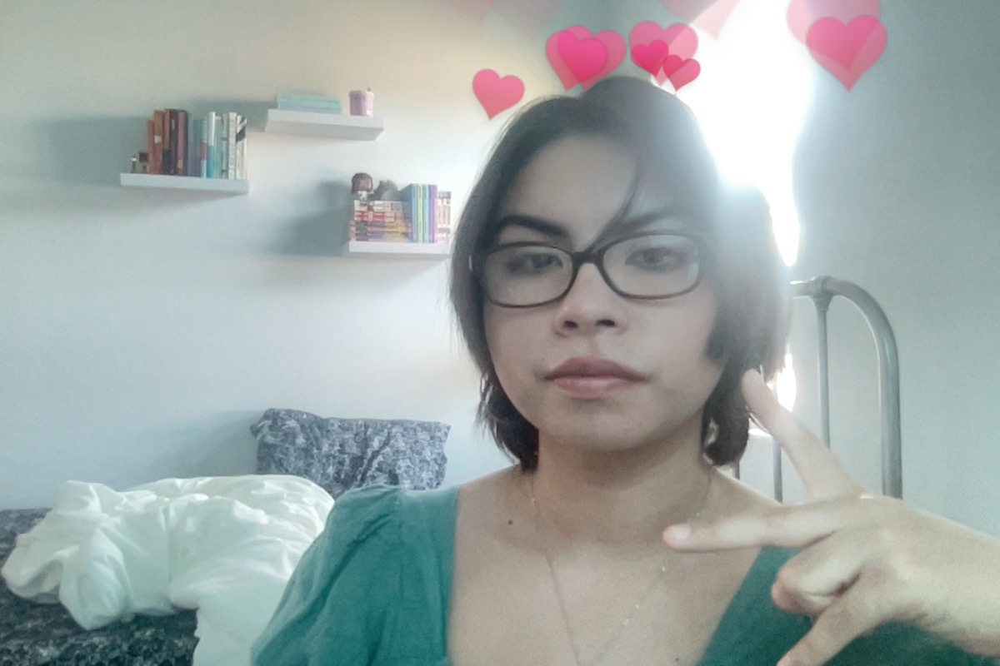

In 2025, I graduated with a degree in Computer Science from UTRGV, where I developed a strong interest in data analysis, information systems, and problem-solving with technology. This portfolio is where I share projects that highlight those skills, from working with SQL and Python, to building tools in Android Studio, to creating dashboards and cleaning real-world datasets.
Beyond the technical work, what motivates me most is the process of taking raw data, organizing it into something meaningful, and empowering others to use that information to make better decisions.
My experience spans both academic projects and hands-on roles, including data cleaning for student information systems, cybersecurity case studies, and building personal tools that explore automation and efficiency.
I enjoy using this portfolio not just to showcase what I’ve learned, but also to track how I continue growing. Each project represents another step toward my goal of building a career where I can apply technology to solve real-world problems and make a positive impact.
